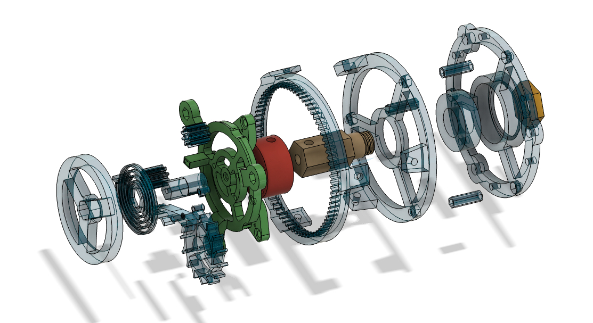
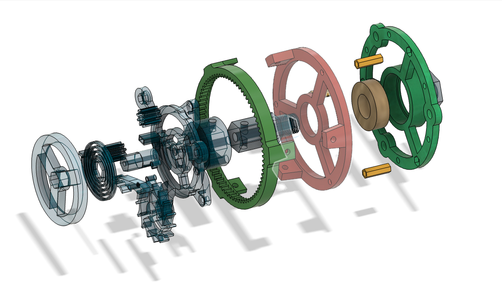

After building the graham clock escapement. I had my eyes set on something new. That something new was a
tourbillon. The way it moved and how cool it is to see operate in such a mesmerizing was just too hard to
resist. It took 6 major revisions to get the final design (and hundreds of minor iterations just to get it
to work) and I don't plan on stopping here.
The Process
I learned how clock mechamisms worked through textbooks and online videos, specifially the
math and geoemtry of the graham clock escapement, during my freetime and during the time I
spent designing a pendulum graham clock escapement for the Science Olympiad—It's About Time
competition.
Calculated the intervals the escapement runs on corresponding to the moment of inertia of the
balance wheel and the balance springs.
Designed a 3D design of a clock escapement that is capable of being printed on consumer FDM
3D printers (Currently only tested with consumer-grade PLA plastic). (NOTE: The balance spring
is tuned for the characteristics found in PLA plastics)
Made 6 major versions of the clock escapement design with numerous minor iterations made to each
version. Once I have tweaked the design to work in computer simulations, further modifications
were made to many components (mostly the pallet forks, balance wheel, and many gears) to work
within the limiations of FDM printers.
The Escapement
The Clock Escapement (Highlighted)
The escapement is still using the graham escapement. However the pallet forks are no longer being dependent
on gravity through a pendulum. Rather, it uses a balance wheel that is able to store and release energy in a regular
interval through the momentum of the balance wheel and balance spring (which is attached to the balance wheel).
In order to get the geometry just right so that it is able to advance the clock escapement, I hade to learn study
horology. Specially, I studied the math behind how these escapements worked. With a bigger escapement mechanism,
small errors were often not an issue but with such a small scale, everything had to be perfect.
The Frame

The Frame (Highlighted)
The Base

The Base (Highlighted)
Skills and Tools Used
Fusion 360: CAD Software
Sovol SV01 (Original) 3D Printer
A direct-drive extruder printer with a glass bed surface
PLA plastic were used for the entire print
Knowledge of Clock Design
I learned about clock escapement designs and the math behind them so that I can recreate it on my own.
Whether it was from a YouTube video, a textbook I found online, or an article, I used as many resources
as I possible could find to design both clock escapement designs.